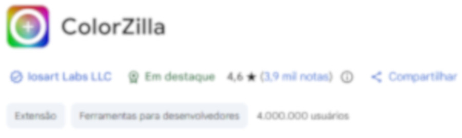

Resumo das aulas 4, 5 e 7
Nesta aula aprendemos que ter uma boa paleta de cores ao seu site é muito importante. Para mais informações, acesse a Parte 1 do capitulo 13 neste repositório.
Para criar uma paleta de cores, existem alguns sites que podem ajudar de forma gratuita:
Com certeza você viu aquele site como uma cor bonita e tirou print para pega-lá para seu projeto. A uma maneira mais eficaz, e eu irei te mostrar agora.
Para fazer a captura das cores de um site que você gostou, existe uma ferramenta para isso, o ColorZilla.

O ColorZilla é uma extensão para o navegador Google Chrome, e pode ser baixada gratuitamente na Chrome Web Store. Ele permite que você capture as cores de qualquer elemento em uma página da web, facilitando a criação de paletas de cores para seus projetos.
Aprendemos nas aulas anteriores sobre o círculo cromático, com ele podemos escolher nossas paleta de cores, mas também com ele, podemos criar degradês com base nas harmonias das cores.